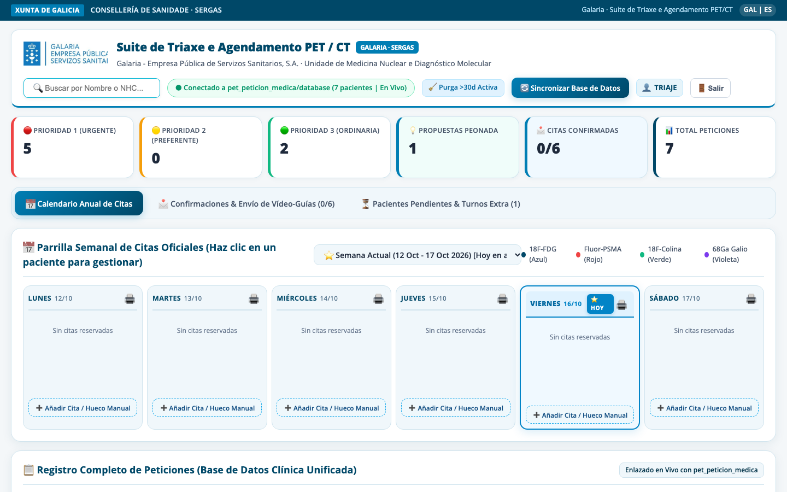
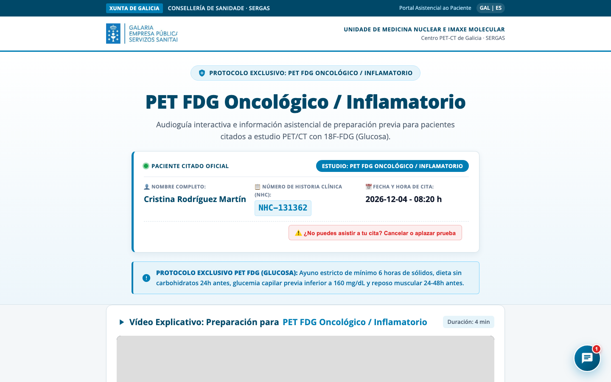
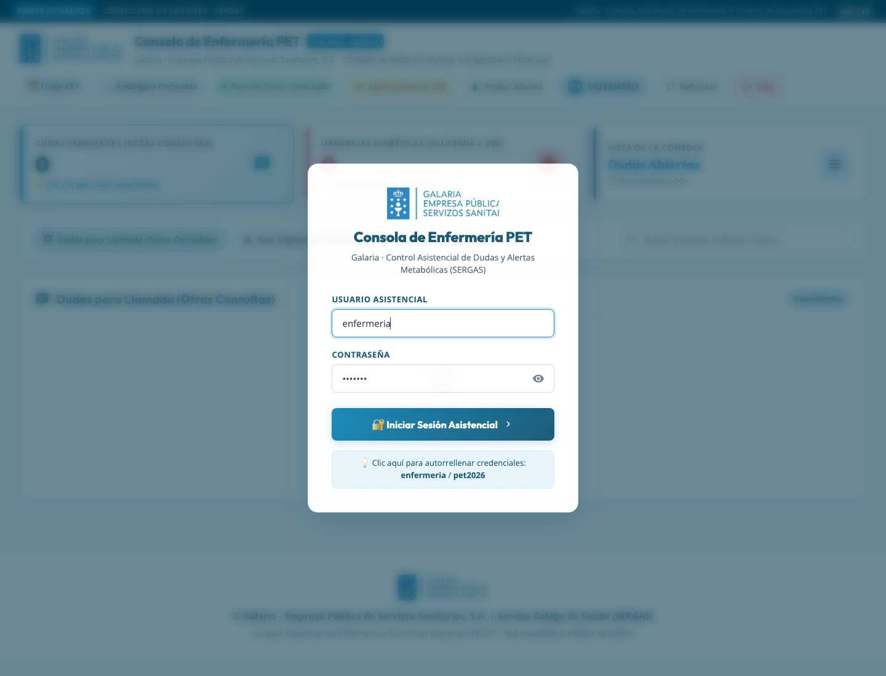
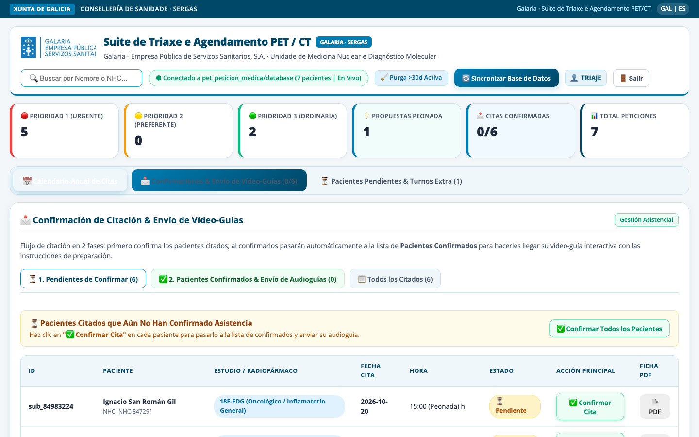
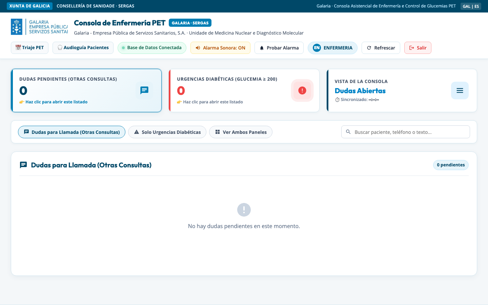
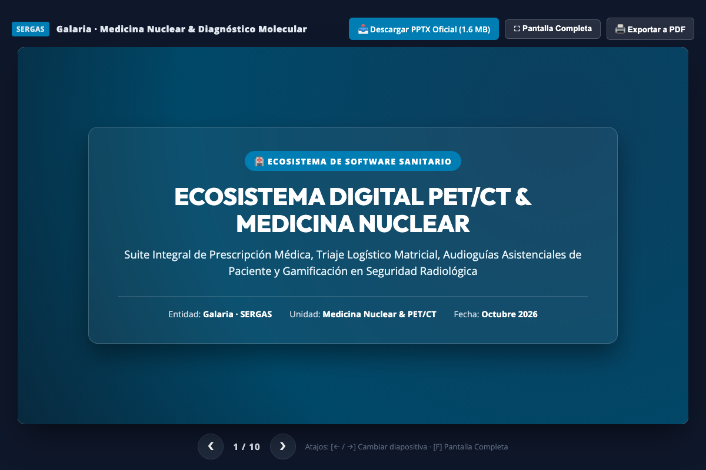

ECOSISTEMA DIGITAL PET/CT & MEDICINA NUCLEAR
Plataforma Asistencial Integral de Prescripción Médica, Triaje Matricial, Audioguías Asistenciales con IA, Consola Médica, Consola TSID y Enfermería
1. Retos y Cuellos de Botella en Medicina Nuclear
La carrera contra el decaimiento isotópico y las cancelaciones en el día de la cita
- Decaimiento Físico Inflexible: $^{18}\text{F}$ (110 min) y $^{68}\text{Ga}$ (68 min). Cada cita perdida destruye la dosis.
- Cancelaciones en el Día: Ingestas inadvertidas o glucemias descompensadas en el box de inyección.
- Volantes No Estructurados: Solicitudes en papel sin peso ni talla para MBq, ni antecedentes de QT/RT.
- Sobrecarga Telefónica: Enfermería consumida respondiendo dudas básicas repetitivas sobre el ayuno.
 Monitorización de Incidencias
Monitorización de Incidencias
2. Arquitectura Integral End-to-End: 6 Módulos Conectados
Flujo asistencial unificado mediante Base de Datos Clínica Sincronizada en Tiempo Real
- Ciclo Completo 360°: Desde la prescripción del oncólogo hasta el alta de enfermería tras la prueba.
- Base de Datos Unificada: Sincronización instantánea entre volantes, agendas y pantallas de sala.
- Consolas por Perfil Clínico: Pantallas específicas para Médicos Nucleares, Enfermería y Técnicos TSID.
- Acompañamiento Continuo: 12 audioguías y asistente virtual empático 24/7 en el móvil del paciente.
 Base de Datos Central Sincronizada
Base de Datos Central Sincronizada
3. Portal Clínico de Prescripción Médica PET/CT
Captura de parámetros dosimétricos y clasificación objetiva según guías EANM
- Cálculo Dosimétrico Automático: Peso y talla obligatorios para calcular la actividad en MBq.
- Catálogo de 10 Protocolos: FDG oncológico, contraste iodado, Endocarditis HEP, PSMA, Colina y Cerebro.
- Motor de Priorización EANM: Clasificación objetiva en P1 (<7d), P2 (<14d) o P3 (>14d).
- Panel 'Mis Peticiones': Seguimiento de estado en vivo para el médico peticionario.
 Formulario de Prescripción
Formulario de Prescripción
4. Suite de Triaje y Agendamiento Matricial
Asignación inteligente por suministro de ciclotrón y filtros preventivos de seguridad
- Parrilla por Radiofármaco: Cupos semanales sincronizados con el ciclotrón (FDG, PSMA y Colina).
- ⛔ Bloqueo Preventivo QT/RT (<21 días): Evita falsos negativos por aturdimiento tumoral fijando fecha mínima.
- Zonificación Horaria Asistencial: 08:00h autónomos, 10:00h traslados en camilla, 11:00h sedación.
- Gestión de Demoras: Planificación de agendas ordinarias y jornadas vespertinas extraordinarias.

Parrilla Semanal de Isótopos5. Portal de Audioguías Oficiales de Preparación
12 protocolos interactivos en el móvil del paciente con voz, cronómetro y enlace oficial SMS
- 12 Protocolos Específicos: Desde FDG estándar hasta dieta cetogénica 16h en Endocarditis.
- Narración Oral con Voz: Locución clara pensada para personas mayores o con dificultades visuales.
- Cronómetro de Ayuno: Cuenta atrás visual adaptada a la hora exacta de la cita del paciente.
- Cero Barreras: Enlace web directo por SMS oficial del SERGAS, sin instalar aplicaciones ni recordar contraseñas.

Audioguía Interactiva Móvil6. Chatbot Empático de Enfermería con Streaming
Asistente clínico virtual 24/7 con escritura palabra por palabra y datos reales
- Efecto Typewriter Streaming: Respuestas redactadas progresivamente con ritmo pausado y humano.
- Personalización Real: Llama al paciente por su nombre, confirma hora y sala en el Meixoeiro.
- Contención de Ansiedad: Explica con cercanía que el tomógrafo es abierto, ventilado y luminoso.
- Síntesis de Voz Integrada: Botón «🔊 Escuchar» para reproducir la respuesta locutada en alta fidelidad.
 Chatbot con Escritura Fluida
Chatbot con Escritura Fluida
7. Consola de Enfermería y Control Pre-Analítico
Semáforo metabólico domiciliario, gestión de incidencias y altas seguras
- Semáforo Domiciliario: Paciente reporta glucemia antes de salir de casa; alerta si $\ge 200$ mg/dL.
- Anticipación de Huecos: Cancelaciones detectadas 24-48h antes para citar pacientes de lista de espera.
- Protocolo 'Pode Marchar': Validación de hidratación y micción para archivar el episodio con un clic.
- Bandeja de Incidencias: Atención prioritaria a pacientes que requieren consulta telefónica real.

Consola de Enfermería en Vivo8. Consola Médica & Carpeta de Peticiones No Triables
Autonomía facultativa intacta, visor de volante oficial y pauta técnica a máquina
- Carpeta de No Triables: Casos clínicos complejos retenidos para que el médico decida prioridad.
- Visor Oficial SERGAS: Acceso inmediato a antecedentes oncológicos, informes de TC y analíticas.
- Pauta a Máquina en 3 Clics: Brazos arriba/abajo, tiempos por cama, diurético (Seguril) y contraste.
- Sincronización en Sala: Órdenes médicas visibles de inmediato en el tomógrafo de los TSID.

Consola Médica & Buzón Clínico9. Consola Técnica TSID (Sala de Tomógrafo)
Tiempos exactos de captación, diagramas anatómicos y semáforo de contraste IV
- Cronómetro de Captación: Tiempo exacto tras inyección para pasar a camilla en pico óptimo (60 min).
- Esquemas Vectoriales Posturales: Indicación visual inequívoca de brazos, centrado láser e isocentro.
- Mapa de Campos FOV: Longitud de corte clara (cráneo-muslos vs cuerpo entero con extremidades).
- Semáforo de Contraste IV: Confirmación de calibre de vía (18G), volumen en mL y retardo de fase.

Consola TSID en Sala de Tomógrafo10. Impacto Asistencial, Clínico y Retorno de Inversión (ROI)
Eficiencia contrastada en listas de espera, aprovechamiento radiofarmacéutico y tiempos
Frente al 8-12% en papel
Cero pérdidas de ciclotrón
De 48h manual a minutos
Enfermería liberada

Métricas y Retorno de Inversión11. Demostración en Vivo & Despliegue Inmediato
Plataforma 100% web con modo demostración auto-reiniciable cada 24 horas
- Modo Demo Auto-Reset 24h: Citas siempre activas para HOY y MAÑANA en cualquier fecha.
- Acceso Universal sin Instalación: Operativo en ordenadores del hospital, tablets y teléfonos móviles.
- Caso Piloto (Carmen Lois Souto): Demostración en 3 min (No Triables -> Triaje P1 -> Chatbot -> Alta).
- Listo para Implantación: Validación departamental para despliegue en Galaria y el SERGAS.
Portal Maestro en Vivo